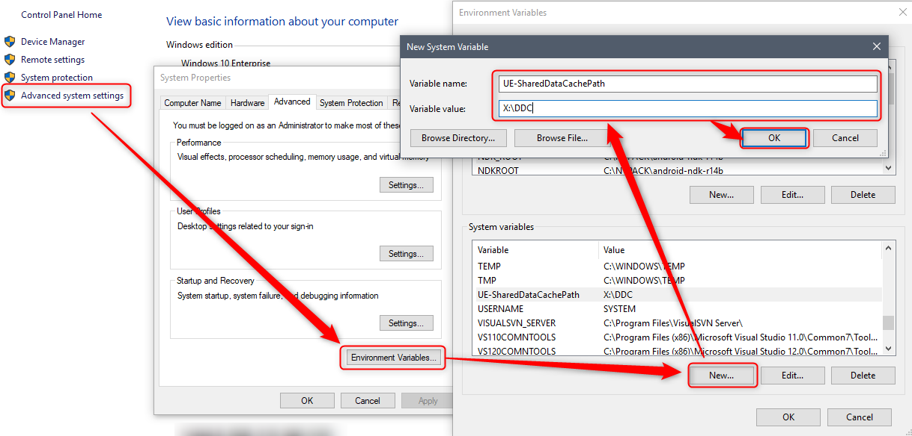

当项目变大之后，新环境启动UE4的Editor需要很长时间，造成这个的原因有很多。在Material被渲染之前，里面包含的Shader都要被编译一下就是原因之一。本篇主要介绍如何使用UE4的DDC(DerivedDataCache)功能，用来大幅削减启动时间和Shader的编译时间。
Overview
首先是直接上官方文档，能读懂官方文档的话直接略过我的内容都是可以的。
DDC的使用
以下皆为在Windows上的操作，Mac的话参考官方文档。
DDC的Settings可以在DefaultEngine.ini中设置，默认设定和设定的说明则可以在BaseEngine.ini中确认。
DDC的类型
Boot DDC: Startup files that are loaded into memory to increase boot times.
For Example: ProjectDir/DerivedDataCache/Boot.ddcLocal DDC: Derived data for your projects.
For Example: EngineDir/DerivedDataCache
根据项目的需要还可以使用另外两种：
DDC Pak
If you download Unreal Engine from the Epic Games Store, the engine will come with a DDC Pak (.ddp). The DDC Pak contains derived data for all engine content, so you can start working without compiling shaders and so on. Similarly, some samples are shipped with a DDC Pak for the same reason.
关于这个DDC的使用我目前还是想不到需要使用的场景，暂且省略。
Shared DDC
这个是这篇文章的中心内容，主要是在团队中起很大作用（应该）。
Shared DDC 的使用
注意SharedDDC的路径不要设置成了本地路径，否则的话，DDC的空间消耗就是双倍了。
开启SharedDDC
首先是设定，根据BaseEngine.ini的设定内容，Editor被设置为使用SharedDDC，而开启SharedDDC有三种方式：
在
DefaultEngine.ini中加入下面的设定（注意路径要修改为自己想要的DDC路径）1
[DerivedDataBackendGraph] Shared=(Type=FileSystem, ReadOnly=false, Clean=false, Flush=false, DeleteUnused=true, UnusedFileAge=10, FoldersToClean=10, MaxFileChecksPerSec=1, ConsiderSlowAt=70, PromptIfMissing=false, Path=\YourCompanyServer\DDC, EnvPathOverride=UE-SharedDataCachePath, EditorOverrideSetting=SharedDerivedDataCache)
设置环境变量
UE-SharedDataCachePath
在EditorPerference->Global中设置
SharedDerivedDataCache路径。
更新SharedDDC
在开启了SharedDDC之后，就需要定期的执行一下DerivedData的更新，虽然不是必要的但是还是搞一下比较好，人家Epic就是每晚更新的。
更新的时候使用下面的命令：UE4\Engine\Binaries\Win64\UE4Editor.exe ProjectName -run=DerivedDataCache -fill
制作Bat文件自动化也好，使用Shortcut应该也可以。
关闭SharedDDC
关闭SharedDDC的方式有两种：
- 命令行中输入
-ddc=noshared（这个没有验证过） - 设置环境变量
UE-SharedDataCachePath=None
确认信息
开启了SharedDDC之后如何确认呢，就是在Output那里搜索LogDerivedDataCache查看DDC的使用Log就可以了。
-logcmds="LogDerivedDataCache Verbose"可以输出更多信息。
参考资料：